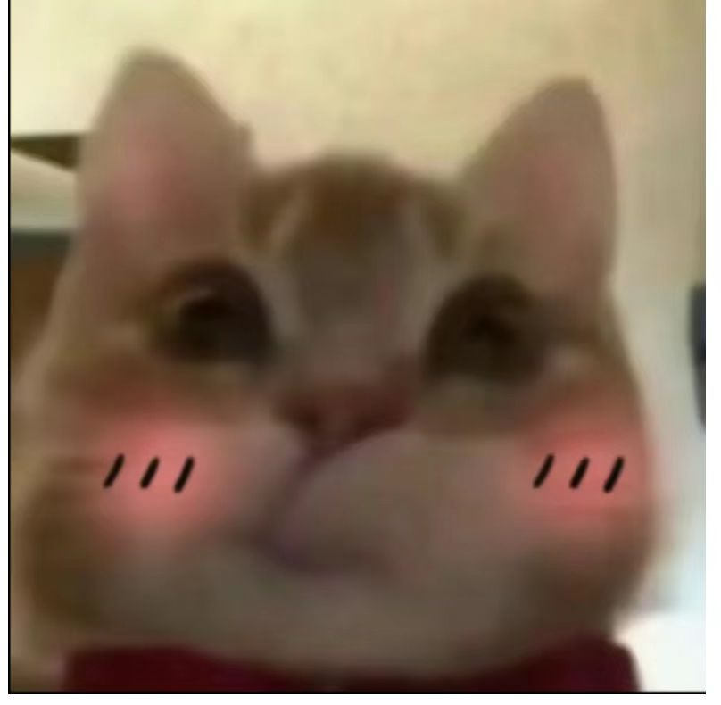

致邓珺
好久好久好久没有联系了，超级无敌的久没有联系了，现在的话我们肯定是已经没有任何的共同话题了，很幸运你相信我点开了这个看似是诈骗的链接，嘿嘿，就是怕莫名其妙你知道吧，只能以网页的形式跟你聊一聊
我是在刚刚，就在刚刚无意之间看见了我们之前2018年，2019年写的信，那时候我们刚上的高中，都很憧憬，反正我是忘记了很多了，你看，这厚厚的一沓点击查看反正我是好好的收藏着的。

我是刚看到还没有认真的看完信,就是感触挺深的，哈哈哈，那会的我们肯定认为我们会一直有话说是吧，会一直的陪在对方身边，是最好且永远的朋友对吧，害，时间呐。也不懂是从什么时候开始，我们写信断了好像也就是说我们的关系也断了，从信里的字里行间我好像感觉到你那会还是会练字，还是个小班干，那会的人际关系不怎么好，你希望还能像初中一样的我们陪在你的身边。害，其实那时候也的我也很欣喜每次你的来信，总是会花费一个晚自习的时间来思考着怎么给你回信，我依稀记得我也会给你一些生活中的小建议...反正哈哈哈，记不太清楚了，不知道你还留没留有着这厚厚的信，不管怎么说，我们也算是经历过写信对话的人了。
那现在的你还练字嘛，还在为人际关系发愁嘛，还喜欢汉服和cospaly嘛，我是一概不知的哈，朋友圈也鲜少见你更新了。你也是到了该些毕业的时候了吧，你肯定不知道我复读了一年，我明年才毕业咧，你好像也知道，我记得你是学园林设计的对嘛，还是说是跟园林设计相关的，不知道在哪里知道的了，也是很久很久之前的事情了。但是我得大学你肯定知道的很少吧，害，那我也不多说，也怕你烦呐，毕竟我们好像是熟悉的陌生人了吧，甚至都不算熟悉，直接就是陌生人了对吧。没事嘿嘿，反正就是感谢曾经的你那么喜欢我。
那就祝你每天开心，且新年快乐！